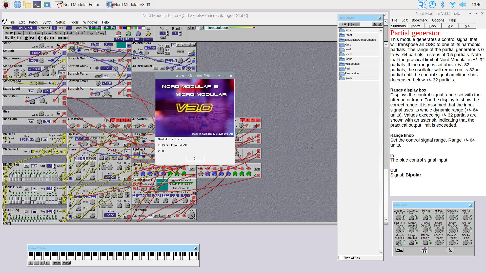
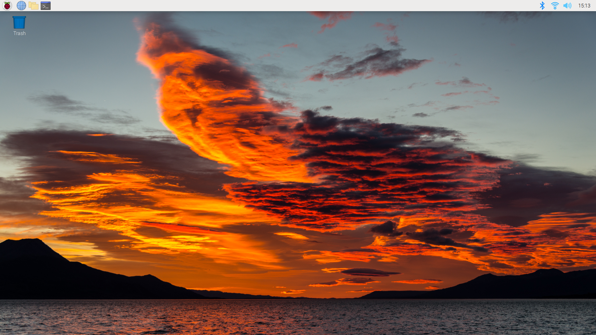
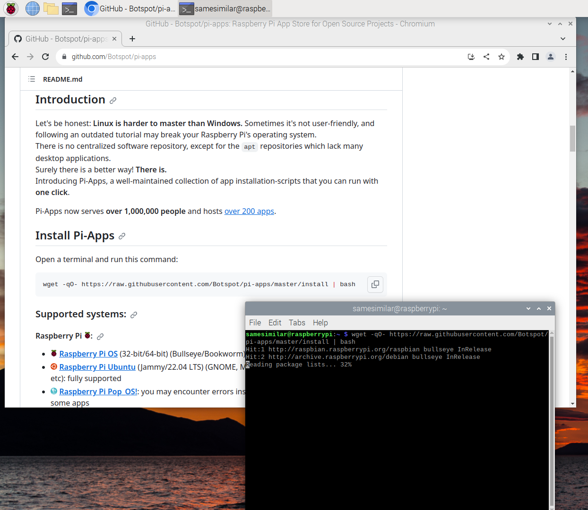
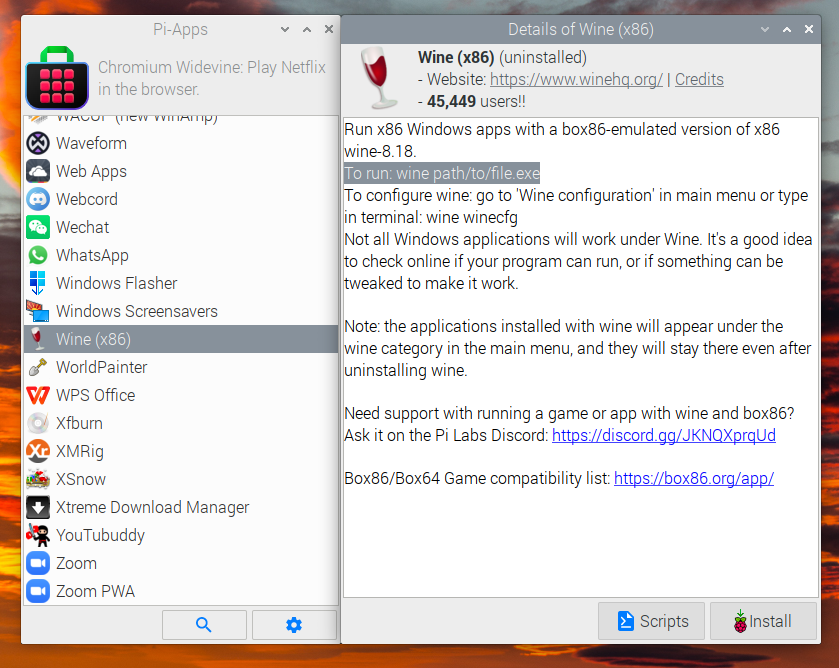
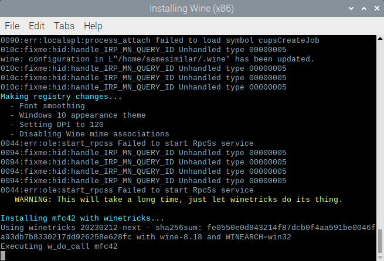
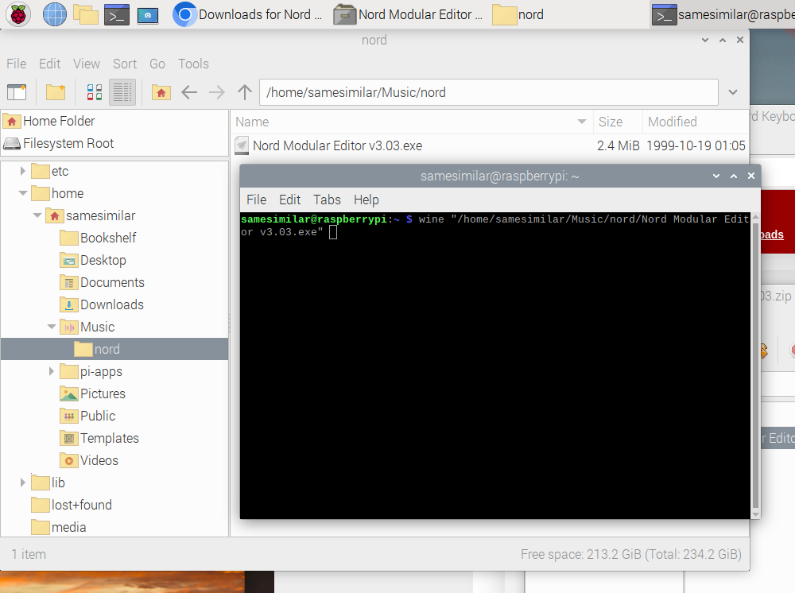

For quite a while I’ve been running the Nord Modular editor on my MacBook. That is: the original Windows version of Clavia’s editor, running using Crossover For Mac on macOS 14 (Sonoma), on an Apple Silicon (M1) MacBook Air has been working well as my setup for patching my Nord Modular. Recently I happened upon the Box86 project and discovered that it could offer a similar environment on Raspberry Pi to the Rosetta/Crossover environment that I have working on my MacBook. So I was curious to try running the Nord Editor on a Raspberry Pi 400.
I discovered that it worked quite well! So I wanted to share the steps for setting this up, in case it is useful to anyone else.
One important caveat right now is that if WINE will not start up properly if a display is not plugged into the HDMI-out port of the Raspberry Pi. This is unfortunate since the RPi OS includes VNC Server (remote desktop). If I learn how to make this work in “headless” mode, then I will update this post. For now, VNC with WINE and the Nord Editor does work, but you need to always have a display plugged into the RPi anyway, reducing the usefulness of this solution.
Feedback
My website doesn’t host comments, so I invite you to post feedback or questions using the Issues tab at this site’s repository at Github.

What you’ll need is:
I’m using a Raspberry Pi 400, which is a convenient format for a beginner in this space. There is a kit available that includes an SD card, power supply, a mouse and even a printed manual.
I imagine a regular Raspberry Pi 4 should also work all the same, but I haven’t tested it. I don’t know what the minimum requirements are.
The setup I am describing has been tested on Raspberry Pi OS Bullseye. The OS image for RPi was called Raspberry Pi OS (Legacy) with desktop and recommended software. It’s the one that came installed on the SD card that came with the RPi 400 kit. It’s a 32-bit operating system.
Generally you will need a USB MIDI interface that doesn’t require special drivers (i.e. it should be “USB class compliant”). That is to make it easy for the RPi OS to recognize it. I have tested an M-Audio UNO USB-MIDI cable, and my MOTU M4 audio interface (with MIDI ports), and both have been functional for this purpose.
Here is a summary of the procedure in case you don’t need the full description. The general idea is first to install Pi-Apps on your RPi, which offers “one-click” installers for Box86 and WINE. Then you can download or copy the Nord Modular Editor for Windows onto your Pi and run it with the wine command.
wine command, e.g. wine "/path/to/Nord Modular Editor v3.03.exe" with the path name to the executable. I recommend adding a menu item to the Raspberry Pi menu. See below for details. Note: On my RPi 400 it takes a couple minutes for the app to start up (it may seem like nothing is happening). It runs well and is perfectly snappy once it starts up.When the editor starts up, you should see your MIDI interface listed in the Nord editor’s MIDI setup dialog box (click Setup -> MIDI…). Once that is enabled, and assuming your Nord Modular is connected, it should pop up immediately. The editor will have access to all the files on the Linux file system, so you should be able to easily open patches that you have downloaded.
Happy patching!
Connect your RPi to a monitor, with a keyboard and mouse (the Pi 400 conveniently has a keyboard built in), and power it up. The first time you set it up you will go through a process to select your language, locale, username, password, and connect to a WiFi network. I recommend installing the updates when it offers to, to get that out of the way. When it’s finished it will reboot to the RPi desktop. Hint: Choose a good password if you intend to enable SSH and VNC to use your RPi remotely.

On the top-left of the screen, you’ll have icons for (reading from left to right):
Pi-Apps is an installer app that lists about 200 apps for Raspberry Pi, making it easy to install a bunch of useful items each with one click. We are going to use it to install Box86 and WINE (x86). To get there, though, Pi-Apps needs to be installed using the Terminal.
As of this writing you are looking for:
wget -qO- https://raw.githubusercontent.com/Botspot/pi-apps/master/install | bash

You can find the Pi-Apps app on the RPi ‘start menu’ under Accessories.
A terminal will open and some scripts will run for a few minutes. Wait until it says it is finished before installing WINE.
This will take about an hour to install. You may see some error messages and stuff pop up while it installs, but I just ignored them and I bet you can too.


Ok we are mostly done now! Head over to the Nord Keyboards website at https://www.nordkeyboards.com/downloads/nord-modular to download the editor Windows editor (Nord Modular Editor v3.03.zip) to your RPi. Double-click the downloaded .zip file to open the archiver utility, and extract the .exe into a convenient location. I put mine in a nord subfolder of the Music folder.
Now we are ready to run the editor. Plug in your USB MIDI interface and run the .exe by passing its path to the wine command on the terminal.
e.g. for me I would put the following command:
wine "/home/samesimilar/Music/nord/Nord Modular Editor v3.03.exe"
Take care with upper- and lower-case and notice I put the path in quotes since the path/filename has spaces in it.
After a couple minutes of zen, the editor will finally start up, and you should be able to set it up as usual.

Here are a few more optional steps to improve the usability of your setup:
At the same Nord Keyboards page you can download the Windows Help File for the editor app. If you just click to download it, the file type is not recognized as binary data and just loads on the Browser window as garbled text. To save the file:
Since you have the Web Browser open, why not head over to electro-music.com and download the entire Nord Modular Classic archive?
The command will be the same as the one we used to start wine on the terminal.
For me it was:
wine "/home/samesimilar/Music/nord/Nord Modular Editor v3.03.exe"
Click ‘ok’ to close the editor. You should now have a launcher item for the editor on your start menu.
Good luck! I hope this article is useful. Remember you can post feedback or questions using the Issues tab at my site’s repository at Github.